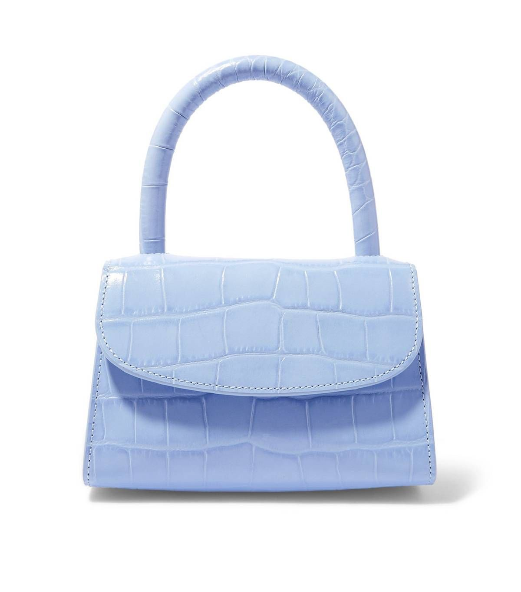
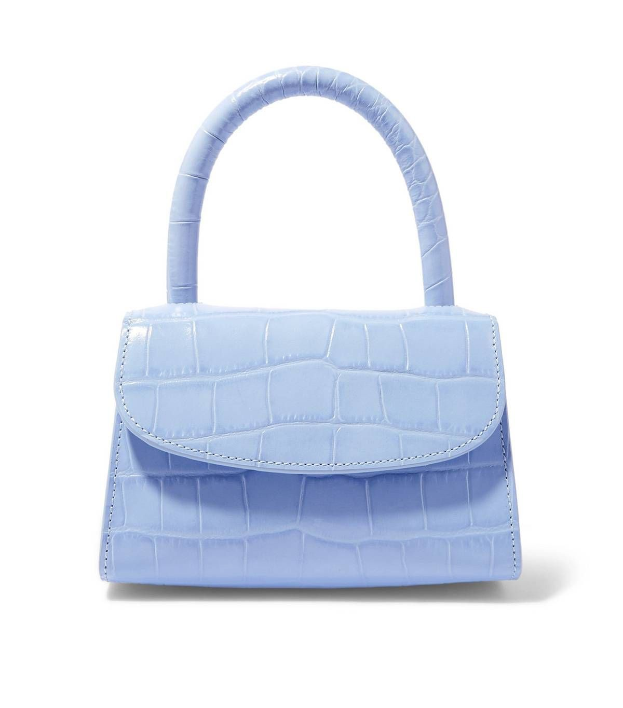

Walk With Confidence

 

The use of bags predates recorded history, with the earliest bags being no more than lengths of animal skin, cotton, or woven plant fibers,
folded up at the edges and secured in that shape with strings of the same material.
The kind of bag you want is what we have